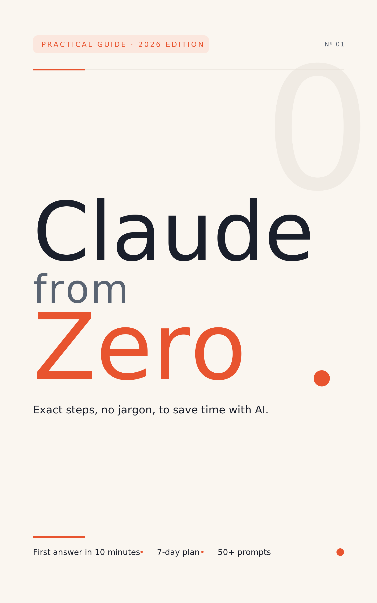

Important notice: Independent educational product. Not affiliated with, sponsored, or approved by Anthropic. Claude is a trademark of its respective owner.
This ebook is a hands-on guide to learning Claude from zero. Claude is an artificial intelligence assistant. Artificial intelligence (or “AI”) is a computer program that can understand what you write and answer you, almost like a conversation with a person.
You won’t find complicated theory here. You’ll find exact steps. Each chapter tells you where to click, what to type, and what you’ll see on screen. The goal is simple: to help you save time on your everyday tasks using AI, with no technical knowledge required.
This ebook is for you if:
You don’t need any prior experience. You only need a phone or a computer, an internet connection, and the will to practice.
By the end of this ebook you’ll know:
Let’s be honest from the start:
Every learning chapter (1 through 12) follows the same structure. That way you always know what to expect:
The final chapters (13 through 18) are for reference: they keep sections like “Now you,” “The typical mistake,” “If you get stuck,” “In one sentence,” and “Next step,” but their body has its own format (a list of mistakes, a prompt library, a day-by-day plan, closing words, a glossary, and a bibliography).
One piece of advice: don’t read this ebook like a novel. Read it with Claude open on your phone or computer. Read one step, do it, then move on to the next. Practicing is what makes the difference.
Each module is designed to take you 20 to 40 minutes, exercises included. You can do one chapter a day, or two a week. You set the pace. It’s better to move slowly and practice than to read it all in one sitting without touching the computer.
Fast path (if you’re in a hurry): read chapters 2, 4, 5, and 14. With those four you can create your account, write good requests, and apply Claude to a real task. Come back for the rest when you have time.
Full path (recommended): read the chapters in order, from 1 to the end. Each chapter builds on the one before it. This path is the best if you’ve never used AI, because it takes nothing for granted.
You’ll see notes like this throughout the book: [VERIFY: detail that may change]. It means that detail (a price, a feature, a button name) may have changed since this ebook was written. When you see one, check the information on the official site before making a decision.
You’ll also meet characters like Marcela, owner of “El Faro Stationery.” They are made-up people and businesses for the examples. Any resemblance to real life is a coincidence.
Ready? Take a breath. This is easier than you think. See you in Chapter 1.
Understand what Claude is, what it can do for you, and where it gets things wrong. By the end you’ll be able to explain it to someone else in your own words.
Claude is an artificial intelligence assistant. Artificial intelligence (or “AI”) is a computer program trained to understand text and respond with text. You write something to it, as if you were texting a person, and Claude answers.
Who is behind it? A company called Anthropic. It’s a U.S. company dedicated to building AI and researching how to make it safer and more reliable. Anthropic creates Claude, maintains it, and updates it.
Now, a clarification that confuses many people: the word “Claude” is used for three different things. Let’s use an everyday analogy.
Think of purified water:
In short: same brain, different doors in. You’ll use the easy door — the application.
This chapter is about understanding, not clicking. The exercise is to put your ideas in order. Grab paper and pen, or open the notes app on your phone.
You know it worked if… you can read your four notes out loud and they sound logical, with no gaps.
If it doesn’t appear, then… if any idea still feels unclear, reread “The idea, made simple” slowly. Don’t move on to Chapter 2 with doubts; this is the foundation.
With the application, Claude can help you:
An example. Marcela owns El Faro Stationery. She used to spend an hour drafting her back-to-school announcement. Now she writes to Claude: “Draft a friendly announcement for my customers: school supplies will be on sale from August 1 to 15.” Claude gives her a draft in seconds. Marcela reviews it, changes two sentences, and done.
Notice the detail: Marcela reviews the text. That leads us to the most important part of the chapter.
Claude has limits. Knowing them protects you:
Golden rule: if the information matters, verify it before using it. A fact for an official procedure? Confirm it at the official source. A figure for your business? Look it up on a trusted site. Health advice? Ask your doctor.
Think of Claude as a very fast, very well-read helper who sometimes gets confused with total confidence. A good boss reviews their helper’s work. You are the boss.
Guided exercise. Explain to a family member or friend, in one minute, what Claude is. Use the water analogy for the difference between model, application, and API. If the other person gets it, you got it.
Independent exercise. Write a list with two columns. Column 1: “I would trust Claude with…” (for example, an email draft). Column 2: “I would always verify…” (for example, dates, prices, paperwork requirements). At least three items per column.
Believing everything the AI says is true because “the computer said so.” Hallucinations exist. The text can sound perfect and still contain a false fact. Trust Claude for the draft; trust yourself for the verification.
Claude is an AI assistant created by Anthropic that helps you write, summarize, and analyze — as long as you verify what matters.
Now you know what Claude is. In Chapter 2 you’ll create your account, step by step and safely. Have your email handy.
Create your account at claude.ai, sign in without trouble, and get the basic settings ready. By the end you’ll have Claude working and you’ll know how to protect your account.
To use Claude you need an account. An account is your “personal key”: it tells the service who you are and keeps your conversations. Creating one is free and takes a few minutes. You do it at claude.ai, from your browser. The browser is the program you use to visit web pages (for example Chrome, Safari, or Edge; its icon is usually a colorful circle or a compass).
That’s all. You don’t need a credit card for the free account. [VERIFY: current sign-up requirements, including phone verification if requested]
You know it worked if… you see a screen with a greeting and a text box inviting you to write your first message.
If it doesn’t appear, then… check your “junk” or “spam” folder in case the code landed there; wait two minutes and ask to resend the code; or close the browser and repeat from step 1.
“Signing in” means entering the account you already created.
You know it worked if… your previous chats appear, or you see the greeting with your name.
If it doesn’t appear, then… you probably chose a different sign-in option. Go back and try the other one (if you registered with Google, sign in with Google).
You know it worked if… you found the settings menu and reviewed the privacy section, even if you didn’t change anything.
If it doesn’t appear, then… options move around with updates. Look for words like “Settings,” “Preferences,” or “Privacy” in the corner menus.
Claude has a free plan and paid plans. In general it works like this:
Which one is right for you? Start with the free one. Use it for about two weeks. If the limits slow you down often, consider paying. Exact prices and names change: [VERIFY: current plans and prices at claude.com/pricing].
Sometimes this ebook mentions a button or feature you don’t see. Don’t worry: availability depends on your account, plan, and country, and screens change with updates. What to do: first, look for the feature under a similar name in the menus. Second, sign out and sign back in. Third, check whether it’s exclusive to a paid plan [VERIFY: features by plan]. If it’s not there, keep going: almost everything in this ebook works with the free plan.
Guided exercise. Sign out and sign back in on your own, without looking at the steps. Do it today, while it’s fresh. Sign out from the menu under your initial or photo, look for the sign-out option, then sign back in.
Independent exercise. Write your first message to Claude. Something simple: “Hi, I’m new here. Introduce yourself and tell me three things you can help me with.” Read the whole answer. You’re now conversing with an AI.
Registering with one option (for example, email) and later trying to sign in with another (for example, Google). That can create confusion or even duplicate accounts. Write down, somewhere safe, which option and which email you registered with.
Your account is your key: create it with an email you control, protect it like you protect your bank card, and start with the free plan.
You’re in. In Chapter 3 we’ll take a tour of Claude’s screen so you can recognize every button and lose the fear of exploring.
Recognize every part of Claude’s screen: where you type, where your chats live, and what each button does. By the end you’ll move around with confidence and without fear of “breaking” something.
Claude’s screen is like the counter of a simple store. It has three main zones:
Before we start, memorize this sentence, because it applies to the whole chapter: availability depends on your account, plan, and country. You may see buttons we don’t mention here, or you may not find one we do mention. That’s normal. Nothing you touch will break your account.
A new term: “prompt.” A prompt is simply the message or instruction you write to the AI. “Draft a birthday invitation” is a prompt. We’ll use it a lot starting in Chapter 4.
We’ll take the tour by touching each zone. Have Claude open.
You know it worked if… you have at least two conversations in your list, you went in and out of both, and you found the attach button.
If it doesn’t appear, then… buttons move around depending on the device and updates. Search by function, not by exact position: a paperclip or a plus for attaching, three lines for the menu, an arrow for sending. If a button doesn’t exist on your screen, move on to the next step.
Remember: availability depends on your account, plan, and country. [VERIFY: availability of each feature at the time of reading]
Besides the website, there are apps:
With a single account, your conversations sync: what you start on your phone you can continue on your computer.
Guided exercise. Create a new conversation and type this prompt: “Give me three ideas to organize my week better.” When it answers, rename that chat to “Tests” from the conversation’s options menu. That way you practice creating, chatting, and renaming in one round.
Independent exercise. Make your own map of the screen. On paper, draw a rectangle and mark where these are: the message box, the send button, the chat list, the new chat button, and the attach button. Then note which features from the list above (Projects, web search, styles, memory) do appear in your account and which don’t. That inventory will help you in the coming chapters.
Writing every topic into one single, endless conversation. Mixing the grocery list with the work email and the questions about paperwork makes the answers lose quality — and later you can’t find anything. Simple rule: new topic, new chat. That’s what the new-conversation button is for.
Claude’s screen is a short tour: a box for typing, a list for your chats, a paperclip for attaching, and the rule of “new topic, new chat.”
Now you know the terrain. In Chapter 4 you’ll learn to write good prompts: the skill that turns Claude into a true time-saver.
By the end of this chapter you’ll know how to write instructions Claude understands on the first try. You’ll learn the C.L.E.A.R. Method, a five-step formula for asking for what you need. And you’ll practice with two complete examples: an email and a study plan.
Talking to Claude is like ordering a dish at a restaurant.
If you say “bring me food,” the server will bring you anything. Maybe you’ll like it. Maybe not.
If you say “I’d like a vegetable soup, no onions, in a deep bowl, to go,” you’ll get exactly what you wanted.
The same happens with Claude. The instruction you write is called a prompt (it means “request” or “instruction”). A vague prompt produces vague answers. A clear prompt produces useful answers.
So you never forget an ingredient, use the word C.L.E.A.R. Each letter is one ingredient:
You don’t need to use all five letters every time. For a quick question, one sentence is enough. But when the result matters (a delicate email, a plan, a document), every letter you add improves the answer.
You also don’t need to write the words “Context” or “Goal” in your message. You can write it as one flowing paragraph. The letters are a mental checklist so you don’t forget ingredients, not a required format. In this book we write them out separately so you can see each piece clearly.
One more thing before we start: don’t be afraid of “writing a prompt wrong.” There are no penalties and no wrong ways to ask. The worst that can happen is the answer doesn’t help you… and that’s fixed with the letter R.
You’ll see two complete examples. In each one you’ll see the weak prompt, the improved prompt using C.L.E.A.R., and how to iterate. Iterating means improving something in rounds: you ask, review, correct, and repeat until you’re satisfied.
Step 1. First, look at the weak prompt.
Write me an email to change an appointment.
You’ll see that Claude answers something generic. It doesn’t know who the appointment is with, why you’re changing it, or what tone to use. It will make up the details.
Step 2. Now write the prompt with C.L.E.A.R.
Copy this example into Claude and send it:
Context: I'm a patient at Dr. Rivas's dental office. I have
an appointment on Thursday at 10 in the morning, but a work
commitment came up that I can't move.
Goal: I want an email asking them to move my appointment to
the following week, preferably in the afternoon.
Edges: Friendly and brief tone. I want to apologize for the
change, but without overdoing it. 100 words maximum. Don't
invent details I didn't give you.
Answer format: The email ready to copy, with the subject
line included.
You know it worked if the answer mentions Dr. Rivas, Thursday at 10, and proposes the following week in the afternoon. If any of those details doesn’t appear, then reply: “You left out [the detail]. Please add it.”
Step 3. Understand the difference.
The first prompt forced Claude to guess. The second gave it the situation (Context), the objective (Level the goal), the rules of the game (Edges), and the shape (Answer format). That’s why the second email comes out almost ready to send.
Step 4. What to expect as an answer.
A short email, with a subject line, a greeting, the request to change, the proposed new date, and a warm sign-off. Nothing more.
Step 5. Review and refine (the letter R).
Read the email. Does it sound like you? If not, ask for specific adjustments. For example:
It's good, but make it a little warmer and change
"Dear Doctor" to "Hello, Dr. Rivas".
You’ll see that Claude delivers a new version with only those changes. You don’t need to repeat the whole prompt.
Step 1. Look at the weak prompt.
Make me a plan to learn English.
You’ll see a generic plan, maybe very long, designed for a person who isn’t you.
Step 2. Write the prompt with C.L.E.A.R.
Context: I'm 52 years old and I work full time. I know a
little English: I understand scattered words, but I can't
hold a conversation. I have 30 minutes a day, Monday through
Friday, and I study alone at home with my phone.
Goal: I want a 4-week plan so I can introduce myself, order
food, and ask for directions in English.
Edges: Act as a patient teacher. Use activities that are
free or only need a phone. Avoid advanced grammar. Simple
language, no teaching terms you don't explain.
Answer format: A table with 4 rows (one per week) and 3
columns: what to practice, how to practice it, and how to
know I made progress.
You know it worked if you receive a four-week table adjusted to 30 minutes a day. If it doesn’t come as a table, then write: “Present it as a table, as I asked.”
Step 3. Understand the difference.
The context (age, time, level) makes the plan realistic. The concrete goal (“introduce myself, order food, ask for directions”) prevents an endless plan. The edges (“patient teacher,” “no advanced grammar”) define the style. And the table format makes it easy to follow.
Step 4. What to expect as an answer.
A clear table, with small activities and a way to measure your progress each week.
Step 5. Iterate.
Try the plan for a few days. Then come back and tell it the truth:
Week 1 was easy for me, but week 2 was really hard.
Make it gentler and spread the hard parts across
weeks 3 and 4.
Claude will adjust the plan. That back-and-forth conversation is the most valuable part of the method. A plan corrected with your real experience is worth ten times more than the perfect plan from the first answer.
If you’re a student: both examples work the same for you. Swap the dentist appointment for an email to a professor asking to make up an assignment, and the English plan for a study plan for your hardest subject. The method doesn’t change; only your details do.
Guided exercise. Take this vague request: “Help me with my mom’s gift.” Improve it with C.L.E.A.R.:
You know it worked if the 5 ideas respect your budget and the tastes you gave.
Independent exercise. Think of something real you need this week (a message, a decision, a plan). Write it vaguely first. Then rewrite it with the five letters. Send both versions to Claude, one after the other, and compare the answers. The difference will convince you more than this chapter.
Trying to write the perfect prompt on the first try… or giving up if it doesn’t come out. Many people believe that if the first answer wasn’t good, “Claude doesn’t work” or “I don’t know how to use it.” False. The letter R exists because almost nobody gets the ideal answer on the first attempt. Expert users don’t write perfect prompts: they correct quickly and without embarrassment. Asking for changes isn’t failing; it’s the normal way to work.
Tell Claude who you are, what you want, under what conditions, and in what format — then refine the answer until it’s yours.
You have the method. In Chapter 5 you’ll use it from start to finish on a real task: writing a difficult email, reviewing it, correcting it, and saving it as a template forever.
In this chapter you’ll complete a real task with Claude without skipping a single step: from defining what you need to saving your prompt as a template to reuse. By the end you’ll have a finished email and a method that works for any uncomfortable email.
We’ll follow a character you already know: Marcela, the owner of El Faro Stationery. Besides the counter, Marcela fills special custom orders. Her print shop fell behind, and now the personalized planners her customer Mr. Arturo ordered will arrive two weeks late.
Marcela has been staring at the screen for half an hour, not knowing how to start. She feels embarrassed. She’s afraid the customer will get angry.
This is the kind of task where Claude shines: it doesn’t decide for you, but it helps you say the hard thing with clarity and respect. You bring the truth and the judgment; Claude brings the draft. Follow the steps with Marcela, then repeat them with an email of your own.
Step 1. Define the need in one sentence.
Before opening Claude, Marcela writes on paper what she needs: “Tell Mr. Arturo that his personalized planners will be delivered two weeks late, without losing his trust.”
You know it worked if your sentence fits on one line and says what you want to achieve, not just what happened. If it doesn’t come out, then ask yourself: “What do I want the other person to feel or do when they read my email?”
Step 2. Gather the information.
Marcela writes down the real facts: the promised date (August 10), the new date (August 24), the cause (the print shop’s delay), and what she can offer (free shipping as an apology).
You know it worked if you have dates, the cause, and a possible compensation written down. If you’re missing a fact, then get it before continuing: Claude doesn’t know it and must not invent it.
Step 3. Write the prompt with C.L.E.A.R.
Marcela opens Claude and writes:
Context: I own a stationery store and fill special custom
orders. My customer, Mr. Arturo, ordered personalized
planners with delivery promised for August 10. My print shop
fell behind and the new delivery date is August 24. He is a
good customer and I want to protect the relationship.
Goal: An email to tell him about the delay, apologize, and
keep his trust.
Edges: Honest, warm, and professional tone. No long excuses:
a brief explanation is enough. I'm offering free shipping as
an apology. 150 words maximum. Don't invent details.
Answer format: The complete email, with subject line, ready
to copy.
You’ll see that Claude delivers an email with a subject line, an apology, the new date, and the offer. You know it worked if the email uses the correct dates and sounds respectful. If Claude added something that isn’t true (for example, a discount you didn’t offer), then tell it: “Remove that; I didn’t offer it.”
Step 4. Review the answer with an owner’s eyes.
Marcela reads the draft slowly and asks herself three things: Is everything true? Does it sound like me? Is anything important missing?
She notices two details: the email opens too cold (“Dear customer”) and it doesn’t mention that the rest of the order is on schedule.
You know it worked if you found at least one thing to change. There almost always is one. If you can’t find anything, then read it out loud: stumbles are easier to hear than to see.
Step 5. Ask for the first correction.
Marcela writes:
Change the greeting to "Dear Mr. Arturo" and make it a bit
warmer, the way I'd talk to a customer of many years.
You’ll see that Claude rewrites only that, without disturbing the rest.
Step 6. Ask for the second correction.
Add a line making clear that the engraved pens WILL be
delivered on the original date, August 10. Only the
planners are delayed.
You know it worked if the new version includes both changes and stays under 150 words. If it got too long, then ask: “Keep it at 150 words maximum.”
Step 7. Verify the facts yourself.
Before sending, Marcela checks with her own eyes: the customer’s name, the two dates, and that the free-shipping offer is something she can truly deliver. This step cannot be delegated. Claude writes well, but the responsibility for the facts is yours.
You know it worked if you compared every fact in the email against your notes from step 2. If a fact doesn’t match, then fix it yourself directly, or ask Claude for the exact change.
Step 8. Copy and send the result.
Marcela selects the email text and copies it. In many Claude apps there’s a copy button next to the answer; if you don’t see it, then select the text with the mouse or your finger and use good old copy and paste. She pastes it into her email program, adds Mr. Arturo’s address, and sends.
You’ll see that the whole process, from step 1, took about 10 minutes. Without Claude, Marcela had spent 30 minutes just staring at the screen.
Step 9. Save the prompt as a reusable template.
Here’s the trick that saves time forever. A template is a saved text with blanks to fill in. Marcela copies her prompt from step 3 and saves it in her notes, but replaces the details with brackets:
Context: I sell [product]. My customer [name] ordered
[order] with delivery on [original date]. Because of
[cause], the new date is [new date]. I want to protect
the relationship.
Goal: An email to announce the delay, apologize, and keep
their trust.
Edges: Honest, warm, and professional tone. Brief
explanation. I'm offering [compensation]. 150 words
maximum. Don't invent details.
Answer format: Complete email with subject line, ready
to copy.
You know it worked if your template no longer has Mr. Arturo’s details, only brackets. If you don’t know where to save it, then use your phone’s notes app with the title “Template: delay email.”
Next time something runs late, Marcela will fill in the brackets and have her email in two minutes.
Guided exercise. Repeat the 9 steps with this case: your character lent out a book they now need back, and they feel awkward asking for it. Define the need, gather the facts (which book, when it was lent), write the prompt with C.L.E.A.R., ask for two corrections, verify, and save the template.
Independent exercise. Choose a real difficult email or message you’ve been putting off: an apology, a payment reminder, a kind “no.” Do it completely with the 9 steps. Don’t send it if you’re not satisfied; the exercise counts even if it stays a draft.
Sending the first draft without reviewing it. Claude’s text comes out so polished that it looks finished. But a difficult email carries your name and your relationship with the other person. Steps 4 through 7 (review, correct twice, and verify facts) are what turn a good draft into your email. Never skip them in delicate messages.
A difficult email stops being difficult when you bring the truth and the judgment, Claude brings the draft, and your template saves the path for next time.
You’ve completed a full real task. In Chapter 6 you’ll discover 10 ways to use Claude in your daily life: from organizing your week to planning a trip, each with its prompt ready to copy.
You’ll learn 10 ways to use Claude in your personal life, each with a prompt ready to copy. By the end, you’ll have tried at least two and you’ll know how to adapt any of them to your situation.
Claude isn’t just for work. It’s like having a patient person on hand who helps you think, organize, and decide in everyday life: the groceries, the trip, the pending conversation with your kid.
The recipe is the same as in Chapter 4: context, goal, edges, format, and refine. The prompts in this chapter already have that structure built in. You just replace the details in brackets [like this] with your own.
⚠️ Important warning: Claude can give you general information about health, money, or legal topics, but it does not replace a doctor, a financial advisor, or a lawyer. Use it to understand things better and prepare questions, not to make sensitive decisions on its own. For any important medical, financial, or legal decision, always consult a professional.
When you have lots of loose to-dos, Claude turns them into a realistic plan. Give it your list as it is, even if it’s a mess.
I have these tasks this week: [type your list, in no
particular order]. I work from [time] to [time] and my free
afternoons are [days]. Organize them by day in a table,
putting the urgent things first. Maximum 3 tasks per day so
it stays realistic. If something doesn't fit, tell me what
you'd leave for next week and why.
What to expect: a table by day, with the urgent items first and honest suggestions on what to postpone. If your week changes, tell it what happened and ask for the adjustment.
Claude builds itineraries tailored to you: budget, pace, and tastes. Remember to verify real prices and schedules before paying for anything, because they change often.
I'm traveling to [city] from [date] to [date] with [who].
Approximate budget: [amount] not counting lodging. We like
[tastes: local food, museums, nature...] and we prefer a
relaxed pace. Build a day-by-day itinerary, with morning,
afternoon, and evening, and include one indoor option in
case it rains. Mark which activities are usually free.
What to expect: a day-by-day plan, with alternatives. Any prices and hours it mentions are approximate: confirm them on the official websites.
Claude explains any topic at whatever level you ask, and you can ask questions without embarrassment as many times as you need.
Explain [topic] to me as if I had an elementary school
background. Use comparisons from daily life. Divide the
explanation into 5 ideas, from the most basic to the most
advanced. At the end, ask me 3 questions to check whether
I understood.
What to expect: a layered explanation and a friendly mini quiz. If one idea isn’t clear, say: “I didn’t get idea 3; explain it with a different example.”
A letter from the bank, a set of rules, a rental agreement you don’t understand? Paste it and ask for a summary. Careful: if the document has very personal details, remove account numbers or anything you don’t want to share first.
I'm going to paste a document. Summarize it in 5 points
using simple language. Then tell me: 1) what I'm being
asked for or informed about, 2) whether there are
deadlines, 3) what questions I should ask before signing
or replying.
[paste the text here]
What to expect: a clear summary with dates and red flags. For important legal documents, use it to understand, and confirm with a professional.
When you’re torn between two products, Claude organizes the comparison. You provide the details of each option (from the stores’ pages) and it lines them up.
I'm deciding between two [product]. Option A: [model, price,
and features]. Option B: [model, price, and features]. I'll
mainly use it for [use] and my priority is [durability /
price / ease of use]. Compare them in a table and tell me
which one suits my case and why, in 3 lines.
What to expect: a comparison table and a reasoned recommendation. The final decision is yours; Claude only lays out the landscape.
Claude helps you see where the money goes and build a simple plan. Remember: this is general guidance, not financial advice.
My monthly income is approximately [amount]. My fixed
expenses: [rent, electricity, water, food, transportation,
etc. with approximate amounts]. I want to save for [goal]
in [time frame]. Build a monthly budget table by category,
point out which category usually leaks money, and suggest
a savings amount that is realistic, not ideal.
What to expect: a table of categories with amounts and concrete advice. Update the real numbers yourself each month.
Before a delicate talk (with your partner, a neighbor, a relative), rehearsing with Claude calms the nerves and organizes your thoughts.
I need to talk to [person] about [sensitive topic]. I'm
worried that [fear]. I want to achieve [objective] without
hurting the relationship. Help me with: 1) three ways to
start the conversation, 2) how to say the main point in one
clear, respectful sentence, 3) what to say if they react
badly. Afterward, if I say "let's rehearse," you'll play
the other person so I can practice.
What to expect: concrete phrases and the option to rehearse like a role-play. Practice out loud: it works better than it sounds.
Goodbye to “what are we eating today?”. Claude plans with what you have and what you like.
There are [number] people in our home. We like [types of
food] and we avoid [allergies or unwanted ingredients].
Tight budget and a maximum of 40 minutes of cooking on
weekdays. Build a Monday-to-Sunday menu (lunch and dinner)
in a table, and at the end give me the grocery list grouped
by section: produce, pantry staples, meats, dairy.
What to expect: a weekly menu plus a shopping list ready for the store. Ask for direct changes: “Swap Thursday’s fish for something with chicken.”
Claude designs gradual plans so you start small and don’t quit by week two.
I want to build the habit of [habit] but I've tried and I
give up. My current routine is [describe it briefly].
Design a 30-day plan that starts ridiculously easy and
ramps up little by little. Format: week by week, with the
daily action, when to do it within my routine, and a plan B
for bad days.
What to expect: a progressive, realistic plan. After a week, tell it how it went and ask for adjustments: consistency is built by iterating.
Birthday toasts, congratulations, a condolence message, a few words for an anniversary. Claude helps you find the words without losing your voice.
I need to write [type of text: toast, congratulations,
dedication] for [person and occasion]. Our relationship:
[brief description]. I want to mention [memory or personal
detail]. Tone [emotional / cheerful / understated], length
of [time or lines]. Give me 2 different versions to choose
from.
What to expect: two drafts with your story woven in. Pick one, ask for adjustments, and say it out loud before the occasion.
Guided exercise. Choose Case 1 (organize your week). Copy the prompt, fill in the brackets with your real week, and send it. Ask for at least one adjustment (“move that thing to Friday”). You know it worked if you end up with a table you actually plan to follow.
Independent exercise. Pick two other cases that catch your attention. Adapt them and use them with real situations of yours. Save the prompts that worked in your notes, with brackets, as you learned in Chapter 5.
Copying the prompt without changing the brackets. The brackets [like this] are spaces for YOUR details. If you leave them empty or generic, the answer will be generic. Thirty seconds filling them in well are worth more than ten corrections later.
Claude is a patient assistant for everyday life: you bring your details and your judgment, it brings the order and the draft.
You now use Claude with ease in your personal life. In Chapter 7 we make the jump to work: 15 professional uses, from emails and meeting notes to sales and training, with a golden rule about confidential information.
You’re going to learn 15 ways to use Claude at work, with a short prompt for each one. You’ll also learn the most important rule of professional use: how to protect confidential information that belongs to your company and your clients.
If you’re not working yet: think of school as your job. Your “clients” are your teachers and classmates, your “reports” are homework and presentations, and your “meetings” are group projects. Almost all of these cases translate directly.
At work, Claude is like an assistant who drafts fast, organizes ideas, and prepares first versions. You are still the one who decides, reviews, and signs.
But before any work prompt, burn this rule into your memory:
⚠️ The golden rule of confidentiality: Never paste confidential information about your company or your clients into Claude without authorization. This includes clients’ personal data, internal financial figures, contracts, passwords, and anything your company considers restricted. If your company has policies about artificial intelligence tools, learn them and follow them. When in doubt, ask your boss or the department in charge.
How to anonymize (remove the details that identify someone): - Replace real names with generic ones: “Client A,” “Company X,” “my coworker.” - Remove or round off identifiable figures: instead of “$1,847,392,” write “around 1.8 million” or “an amount X.” - Delete emails, phone numbers, addresses, and contract numbers. - Describe the situation without unique details that give away who it’s about.
The good news: an anonymized text works just as well. Claude doesn’t need to know the client’s real name to help you write to them.
In the 15 cases that follow, the prompts come pre-anonymized. Keep that habit.
The most frequent use. It works for replying, requesting, reminding, or delivering bad news with tact.
Draft an email for [situation: requesting an extension /
responding to a complaint / following up]. Recipient: [role,
no real name, e.g., "a frequent client"]. Key facts:
[facts]. Professional and friendly tone, 120 words maximum,
subject line included.
What to expect: an email ready to personalize with the real name outside of Claude.
Minutes are the written summary of what was discussed and agreed on in a meeting. Paste your loose notes (anonymized) and ask for order.
Turn these meeting notes into formal minutes with:
attendees (by role), topics discussed, agreements, owners,
and due dates. Notes: [paste your notes without real
names; use initials or roles].
What to expect: structured minutes. Check that the agreements and dates match what was actually said.
For the weekly or monthly report that’s always hard to start.
Help me draft a [weekly/monthly] report for my department.
Wins: [list]. Pending items: [list]. Problems: [list].
Format: title, 3-line summary, and sections with
bullet points. Direct tone, no fluff.
What to expect: a clean report that only needs your verified numbers.
Claude doesn’t design the slides, but it builds the structure and the text for each one.
I'm going to present [topic] to [audience] in [minutes].
Goal: [what I want to achieve]. Propose the structure slide
by slide: a title for each one, 3 content bullets, and an
idea for the closing.
What to expect: the complete skeleton of your presentation, ready to move into your slide program.
To quickly understand a new topic in your industry before a meeting.
Explain [topic in my industry] in plain language: what it is,
why it matters, who the main players are, and what smart
questions I can ask in a meeting about it. At the end, tell
me what information I should verify in current sources.
What to expect: a solid initial overview. Complement it with recent sources: Claude’s data may not be up to date.
To turn a vague assignment into a plan with steps.
I've been assigned [project]. Deadline: [date]. Team:
[number of people and roles]. Break the project into stages
with: tasks, suggested owner by role, estimated duration,
and main risks. Format: table.
What to expect: a draft plan to adjust with your team. The durations are estimates: validate them.
You can paste a small table (anonymized) and ask for readings.
I'm pasting a table with [what it contains, e.g., monthly
sales by region, with generic names]. Tell me: 1) the 3 most
important trends, 2) which data point looks odd or deserves
review, 3) a two-line conclusion for my boss.
[paste the table]
What to expect: an organized reading of your numbers. Verify the important calculations with a calculator or spreadsheet.
Internal policies, procedures, formal letters, job descriptions.
Draft a [type of document, e.g., procedure for requesting
vacation time] for a company in [industry and size]. It must
include: purpose, steps, owners by role, and exceptions.
Formal but understandable language.
What to expect: a serious draft for the appropriate department to review and approve.
To prepare proposals and respond to objections. An objection is the doubt or the “but” a customer raises before buying.
I sell [product or service, described in general terms]. My
prospect is [type of business] and their main doubt is
[objection, e.g., "it's too expensive"]. Give me: 1) three
respectful ways to answer that objection, 2) one question to
better understand their need, 3) a closing line with no
pressure.
What to expect: organized talking points for a conversation, not a rigid script. Adapt them to your style.
Copy for social media, promotional emails, and product descriptions.
Write 3 versions of a social media post about
[product/service/promotion]. Audience: [who you're talking
to]. Tone: [warm/professional/fun]. 60 words maximum per
version, each with a different call to action. No exaggerated
promises.
What to expect: three options to choose from and mix. Make sure every claim about your product is true.
To answer complaints with empathy and order, without getting pulled in.
I received this complaint from a customer (I already removed
their details): [paste the anonymized complaint]. Draft a
response that: acknowledges the frustration, explains without
excuses, offers [a solution I can actually provide], and
leaves the door open. Empathetic and professional tone,
130 words maximum.
What to expect: a response that lowers the tension. Never put in writing anything your company hasn’t authorized.
Job postings, feedback, and internal communication. Feedback means telling someone what they do well and what they can improve.
I need to give feedback to a team member (no name) who does
[strength] well but needs to improve [area for improvement].
Help me structure the conversation: how to open, how to
present the improvement with examples, and how to close with
a concrete agreement. Respectful and direct tone.
What to expect: a flexible script for a human conversation. Sensitive disciplinary matters always go through your human resources department.
Checklists and improvements for day-to-day processes.
Here is how we do [process, e.g., receiving merchandise],
step by step: [describe your current process]. Identify:
1) steps that can be simplified, 2) where errors usually
happen, 3) a printable checklist for the team.
What to expect: a cleaner process and a checklist ready to test on the floor.
To think big before deciding: scenarios, risks, advantages.
I'm evaluating [strategic decision, described in general
terms, e.g., opening a second location]. Context: [business
size, situation]. Play devil's advocate: give me 3 arguments
for, 3 against, the risks I might not be seeing, and what
information I'm missing to decide well.
What to expect: a map of the decision, not the decision itself. Strategic decisions are made with real data and, if they’re big, with professional advice.
To teach your team or prepare training materials.
Design a [duration] training session on [topic] for
[team profile, e.g., new front-counter staff].
Include: objectives, an agenda in blocks with timing, one
hands-on activity per block, and a final quiz of
5 questions with answers.
What to expect: the complete session plan. Adjust the examples to your real operation before delivering it.
Guided exercise. Take case 2 (meeting minutes). At your next meeting, take notes as usual. Afterward, anonymize them (roles instead of names), paste the prompt, and generate the minutes. Compare them with your notes: you know it worked if no agreement is missing and no real name ever appeared in Claude.
Independent exercise. Pick the 3 cases that most resemble your work week. Adapt the prompts, use them with real anonymized situations, and save the ones that work as templates. In two weeks you’ll have your own professional kit.
Pasting confidential information “just this once.” The risk isn’t in careful daily use — it’s in the rushed exception: the full contract, the client database, the payroll. If you have to wonder whether something is confidential, treat it as if it were. Always anonymize: it costs one minute and saves you a serious problem.
At work, Claude drafts and organizes; you protect the information, verify the facts, and sign your name.
You now use Claude in your life and in your work. In the next chapter you’ll level up: you’ll learn to work with documents and images, uploading your own files so Claude can summarize, explain, or transform them.
By the end of this chapter you’ll be able to upload a document to Claude and ask for useful things: a summary, a comparison between two versions, a table extracted from a PDF, or even a brand-new file created from scratch. You’ll also learn to spot when Claude might get numbers wrong and how to verify them.
Until now you’ve typed messages in your own words. But often the information already exists: it’s in a contract, a receipt, a presentation, or a report. Instead of copying everything by hand, you can upload the file to the conversation. Uploading means sending a copy of the document so Claude can read it.
Think of Claude as an assistant you hand a folder to and say: “read it and tell me what matters.” You keep the original. Claude only reads the copy you gave it inside that conversation.
What file types can you upload? In general, the most common ones:
[VERIFY: exact accepted formats and current limits on file size and number of files, because they change over time.]
We’ll practice with a fictional example. Rosa has her condo association’s rulebook as a PDF: 18 pages. She only wants to know what affects her as a pet owner.
Step 1. Prepare the document before uploading it. Check that the file opens properly on your computer or phone, and that it doesn’t contain information you don’t want to share (we’ll cover this in depth in chapter 12). You’ll see that the file opens and the text is fully readable. You know it worked if you can read it yourself without any trouble. If it doesn’t open, then the file may be damaged; ask whoever sent it to send it again.
Step 2. Open a new conversation and look for the attach button. It’s usually a paperclip symbol or a plus sign (+) near the box where you type. You’ll see that a window opens to choose files from your device. You know it worked if your file’s name appears next to your message, before you send it. If the button doesn’t appear, then try dragging the file directly into the text box, or check that your app is up to date.
Step 3. Say what you want, in the same message as the file. Don’t upload the file by itself. Always include a clear instruction with it:
I'm uploading my condo association's rulebook. Summarize it in
10 points. Then, in a separate list, tell me everything it says
about pets, citing the section number where each rule appears.
You’ll see that Claude responds with the summary and the requested list. You know it worked if each point mentions where it came from (section or page). If the answer is too general, then ask: “be more specific and cite the exact section for each point.”
Step 4. Ask for a comparison between two versions. If you have two versions of a document (for example, an original contract and a revised one), upload both in the same message:
I'm uploading two versions of the same contract. Tell me, in a
table, what changed between version 1 and version 2: what was
added, what was removed, and what was modified.
You’ll see that Claude delivers a table with the differences. You know it worked if you can locate each change in the original documents. If it can’t tell which version is which, then rename the files before uploading (for example, “contract-v1” and “contract-v2”) and repeat the instruction.
Step 5. Extract a table from a PDF. PDFs often contain tables that are hard to copy. Ask:
There's a price table in this PDF. Extract it and present it
as a clean table, with the same columns as the original.
You’ll see that Claude rebuilds the table as organized text. You know it worked if the number of rows matches the original. If rows are missing, then point it to the exact page: “the table is on page 7; check again.”
Step 6. Ask Claude to create a new file. Claude can also draft documents from scratch: a letter, an expense table, a task list. For example:
Using the information in this PDF, create a formal letter
addressed to the condo association manager asking them to
clarify the pet rule. Respectful tone, one page maximum.
You’ll see that Claude delivers the finished text, and in many cases it can generate it as a downloadable document. You know it worked if the text uses real data from the PDF, not invented data. If it doesn’t offer a download, then copy the text and paste it into your word processor yourself; the result is the same.
Guided exercise. Take an old receipt or account statement (black out any sensitive data first). Upload it and ask:
Summarize this document in 5 points. Then tell me the total
amount shown and where in the document it appears.
Compare the amount Claude gives you with the one on the original paper.
Independent exercise. Find two versions of any text of yours (for example, two drafts of an email or an invitation). Upload them and ask for a table of differences. Verify two of the changes yourself.
Uploading the file with no instruction, or with a vague one like “review this.” Claude doesn’t know what matters to you. Without a clear instruction, you’ll get a generic summary. Always say what you want, in what format, and with how much detail.
And the second mistake, just as common: believing every figure without verifying. When Claude reads long documents or dense tables, it can misread a number, skip a row, or mix up columns. It’s not bad intent: it’s a limit of the tool. Practical rule: any number that affects your money, your health, or an official process gets verified against the original document, with your own eyes.
Upload the document, say exactly what you need, and verify with your own eyes any number that matters.
You now know how to work with individual files. In chapter 9 you’ll create a permanent space so you don’t have to upload the same things over and over: Projects.
By the end of this chapter you’ll have your first Project created, with permanent instructions and reference files. That way, Claude will remember your context in every new conversation, without you having to explain everything from scratch each time.
A Project is a workspace that doesn’t get erased between conversations. Picture a labeled drawer. Inside it you keep three things:
Without a Project, every conversation starts blank. With a Project, Claude already knows your context from the first message. It’s the difference between explaining your business to a stranger every morning, or working with an assistant who already knows it.
When is one worth using? When you repeat the same type of task over and over: running a business, teaching classes, organizing your home, writing a book, managing your own health treatment. For one-off questions, a regular conversation is enough.
Our fictional example: Martin owns a bakery called “The Golden Wheat” and wants a Project for everything related to the business.
Step 1. Find the Projects option. It’s usually in the app’s side menu, under a name like “Projects.” You’ll see a screen appear with a button to create a new one. You know it worked if you see the list of Projects (empty, if this is your first time). If it doesn’t appear, then your account type may not include it; check your plan’s options or use plan B: save your instructions in a document and paste them at the start of every conversation. [VERIFY: availability of Projects by current plan.]
Step 2. Create the Project and give it a clear name. Use a name you’ll still understand six months from now: “Bakery — Admin,” not “Misc stuff.” You’ll see that the Project space opens, still empty. You know it worked if the name appears at the top of the Project screen. If you got the name wrong, then look for the edit or rename option; it almost always exists.
Step 3. Write the permanent instructions. Find the Project’s instructions section (sometimes called “custom instructions” or similar). Paste an adapted version of this template:
CONTEXT: I am [your name or role, e.g., "the owner of a bakery
called The Golden Wheat, in Portland"].
WHAT I USE THIS PROJECT FOR: [e.g., "admin: prices, suppliers,
customer messages, and simple bookkeeping"].
HOW I WANT YOU TO ANSWER ME:
- In plain English, no technical words without an explanation.
- Short answers first; detail only if I ask.
- If you're missing a piece of information, ask me before assuming.
WHAT I DON'T WANT:
- Don't invent figures. If you don't know, say so.
- Don't use data from one file if a more recent one contradicts it;
alert me to the contradiction.
You’ll see that the text is saved in the Project. You know it worked if, when you open a new conversation inside the Project, Claude already answers by those rules without being reminded. If it doesn’t apply them, then check that you saved the changes and mention in your first message: “follow the Project instructions.”
Step 4. Upload your knowledge files. Add only what you use often: price list, hours, policies, message templates. Less is more: extra files cause confusion. You’ll see the files listed inside the Project. You know it worked if you ask something that only exists in a file (“how much is a dozen rolls on my price list?”) and Claude answers with the correct figure. If it answers with a different figure, then check that you uploaded the right version of the file and delete the old versions.
Step 5. Use orderly file names.
Adopt a convention — that is, a fixed rule for naming. Suggestion: topic-description-date, for example prices-counter-2026-07.pdf.
You’ll see that the file list makes sense at a glance.
You know it worked if you can say what each file contains without opening it.
If you already have files with confusing names, then rename them on your computer and upload them again.
Step 6. Do maintenance once a month. Go into the Project, delete old files, upload new versions, and adjust the instructions if anything changed. You’ll see that the Project stays small and current. You know it worked if there are no two versions of the same document coexisting. If you tend to forget, then set a calendar reminder: “Project maintenance, 10 minutes.”
Guided exercise. Create a Project called “My Home — Organization.” Paste the instructions template adapted to your household. Upload a single file: your usual grocery list or the family’s useful phone numbers (no sensitive data). Open a conversation and ask something that only exists in that file.
Independent exercise. Think of the task you repeat most every week. Create a Project for it, with instructions and three files maximum. Use it for a week and adjust whatever doesn’t work.
Turning the Project into a storage unit. People upload twenty files “just in case,” and then Claude mixes old data with new. A healthy Project has few files — current and well named. If a document is no longer useful, delete it.
A privacy note before closing. The Project stores what you upload, so apply this rule: never store passwords, full card or bank account numbers, or other people’s personal data without their permission (clients, patients, students). If a useful document contains that data, black out or delete that part before uploading it. We’ll cover this in depth in chapter 12.
A Project is a tidy drawer where Claude already knows your context: a few clear rules, a few current files, zero sensitive data.
With your permanent space ready, in chapter 10 you’ll ask Claude to build things: documents, tables, and even small interactive tools called Artifacts.
By the end of this chapter you’ll know how to ask Claude to create results as separate pieces outside the conversation: a formatted document, a table, or even a small interactive tool you can use and share. And you’ll build your first one: a grocery shopping list with checkboxes to tick off.
An Artifact (a created piece or object) is a result that Claude builds and displays in a panel separate from the chat, as if it handed you a finished object instead of just a message.
The difference matters. A normal answer gets lost among the messages. An Artifact is a piece with a life of its own: you can see it in full, ask for corrections, and in many cases use it interactively or share it with other people.
What kinds of things can be an Artifact? For example:
Yes, you read that right: small applications. Claude writes the code for you and you just use the buttons. You don’t need to know how to program. That said: these are simple tools, not professional systems. To run a company’s accounting, keep using proper software.
Fictional example: Carolina stocks the pantry for a family-run inn and wants an interactive grocery list. We’ll build it in full in “Now you.” First, the general steps.
Step 1. Ask for the result as a separate piece. Describe what you want and what it’s for. You can say explicitly “create it as an Artifact” or “as an interactive tool”:
Create a simple tip calculator as an interactive tool:
I type the bill total, choose 10%, 15%, or 20%,
and it shows me the tip and the total to pay.
You’ll see that a panel opens next to the chat with the created piece. You know it worked if you can interact with it (type, click) inside that panel. If you only get normal text, then repeat the request adding: “show it as an interactive Artifact, not as text.”
Step 2. Test it right away. Use the tool with real data. Type a sample bill and check the result with a calculator. You’ll see that the buttons respond and the numbers change. You know it worked if the calculation matches your verification. If something doesn’t respond, then describe it exactly: “the 15% button does nothing; fix it.”
Step 3. Ask for specific corrections, one at a time. Don’t say “make it better.” Say exactly what to change:
Change two things: 1) larger text, designed for older adults.
2) Add a button to clear everything and start over.
You’ll see the Artifact update in the same panel. You know it worked if the requested changes appear and everything else keeps working. If a change broke something else, then say so: “the change removed the 20% button; bring it back.”
Step 4. Share the piece (carefully). Many Artifacts can be shared with a link, so someone else can view or use them. Look for the share or publish option in the Artifact panel. You’ll see that a link is generated for you to copy. You know it worked if the piece appears when you open the link on another device. If the option doesn’t appear, then plan B: copy the content and send it through whatever channel you use, or take a screenshot. [VERIFY: current sharing options by plan and region.]
An important warning before sharing: anyone who has a shared link can view it. Never publish an Artifact containing phone numbers, addresses, your business’s internal prices, client names, or any private data. Review the entire content before generating the link.
Guided exercise: your interactive shopping list.
Create, as an interactive Artifact, a grocery shopping list.
Requirements:
- Sections: produce, dairy, pantry staples, cleaning supplies.
- Each product with a checkbox to mark it as purchased.
- A box to add new products to the section I choose.
- When I check off a product, it shows as crossed out.
- A counter at the top: "You have X of Y products."
- Large text and large buttons, for use on a phone.
Start with 3 sample products per section.
Independent exercise. Ask for an Artifact that’s useful for your week: a meal plan as a table, a water-glass tracker, or a chore schedule for your kids or grandkids. Test it, ask for two corrections, and decide whether it’s worth sharing with someone in your family.
Asking for everything at once and vaguely: “build me a complete app to organize my life.” The result will be confusing and hard to fix. It works better the other way around: ask for a small, concrete piece, test it, and grow it with specific corrections, one at a time. That way you always know which change caused which effect.
An Artifact is a finished piece Claude builds for you: ask for it concretely, test it, fix it piece by piece, and share it only if it reveals nothing private.
You’re now creating things with Claude. Next comes the most important chapter of the book: learning when NOT to believe it, in chapter 11.
By the end of this chapter you’ll know when to doubt an answer, how to ask for sources and actually check them, how to verify calculations and dates, and how to detect when Claude is guessing instead of knowing. This is the skill that separates a naive user from a smart one.
Claude is very good at writing, but sometimes it states things with total confidence that simply aren’t true. That’s called a hallucination: an invented answer that sounds convincing.
A fictional example so it’s clear. Imagine you ask Claude about “the Harlow Act of 1987 on family inheritance.” That law doesn’t exist: we just made it up. A bad answer would say: “The Harlow Act of 1987 establishes in Section 12 that grandchildren inherit in equal shares…” It sounds serious — it even cites a section. And it’s pure invention, built to fit your question. That’s a hallucination: the tool fills the gap with something plausible instead of saying “I can’t find that law.”
Why does it happen? Claude generates text by predicting which words sound right together, based on everything it read during training. It doesn’t consult a filing cabinet of verified facts every time it answers. That’s why it can produce nonexistent citations: book titles, sections of laws, or studies that sound real but that no one ever wrote. The format is perfect; the content, invented.
The solution isn’t to stop using the tool. It’s to use it with a verification method. Let’s get to it.
Step 1. Ask for sources whenever a fact matters.
What are the requirements to apply for that document?
Give me your sources: the name of the official site and, if
you can, the exact link where each requirement comes from.
You’ll see that the answer includes source names or links. You know it worked if each important claim has its source next to it. If it answers without sources, then insist: “don’t give me the fact without telling me where it comes from.”
Step 2. Open the sources and read them yourself. This is the step almost nobody does — and it’s the one that matters. A cited source is not a verified source. You’ll see that the link opens and the page says (or doesn’t say) what Claude claimed. You know it worked if you found the claim with your own eyes in the source. If the link doesn’t open or the page doesn’t say that, then discard the fact and tell Claude: “that source doesn’t say that; look again or admit you don’t know.”
Step 3. Compare dates. A fact may have been true once and no longer be: prices, requirements, phone numbers, rules. Check how old the source is and ask:
What date is this information from? Could it have changed since then?
You’ll see that Claude clarifies how old the fact is, or its knowledge cutoff date. You know it worked if you know the date of the fact before using it. If the fact is old and the topic changes often, then confirm it on the current official site before acting.
Step 4. Tell primary sources from secondary ones. In simple terms: the primary source is the direct origin of the fact (the published law, the official site for the process, the original study). The secondary source is someone retelling what the primary one says (a news article, a blog, a video). Secondary sources help you understand; primary sources are for deciding. If you’re going to sign, pay, or file paperwork, go all the way to the primary source. You’ll see that many answers cite secondary sources. You know it worked if, for the key fact, you located the original document or organization. If no primary source can be found, then treat the fact as a rumor.
Step 5. Verify calculations with a calculator. Claude can make arithmetic mistakes, especially over several steps. Fictional example: Ernesto asked it to split the costs of a family trip among 7 people, with a total of $8,435. Before charging anyone, he typed the division into his phone’s calculator: $1,205 per person. You’ll see that the operation takes ten seconds. You know it worked if your result matches Claude’s. If it doesn’t match, then send your result: “I get 1,205; show me your math step by step.”
Step 6. Hunt down hidden assumptions. Many answers assume things you never said: your country, your age, that you hold a certain document. Ask directly:
What did you assume in order to give me this answer? List it.
You’ll see a list of assumptions appear, and one of them is usually wrong. You know it worked if you correct the false assumptions and the answer changes. If it says it assumed nothing, then check yourself: does it apply to your city, your case, this year?
Step 7. Ask for the confidence level.
From 1 to 10, how confident are you in each point of your answer?
Flag which ones I should verify before I act.
You’ll see that Claude separates solid points from doubtful ones. You know it worked if you focus your verification on the weak points. If it marks everything at maximum confidence, then be suspicious of exactly that: nothing complex is a 10 out of 10 across the board.
Guided exercise. Ask Claude about a topic you know well (your trade, your city, a family recipe). Ask for sources and a confidence level. Since you know the topic, you’ll easily spot what it got right, what it generalized, and what it invented. This exercise calibrates your eye.
Independent exercise. Take a useful answer Claude gave you this week. Apply steps 1, 2, and 5: sources, opening the sources, and verifying any numbers. Write down what you found.
Confusing confidence with truth. Because Claude writes fluently and without hesitation, we feel like it “knows.” A confident tone is not evidence. A flawless text can hold an invented fact on line three. Verify based on the weight of the decision, not the tone of the answer.
Golden rule: if the decision is important, the final review is always human — yours or a professional’s in that field.
You now protect your decisions. In chapter 12 you’ll protect something just as valuable: your personal information and your family’s.
By the end of this chapter you’ll have clear rules about what never to share with an artificial intelligence, a 4-step protocol for anonymizing information before sending it, defenses against scams, and criteria for guiding minors and older adults in using these tools.
Everything you type or upload to a conversation leaves your device and travels to the servers of the company that runs the service. Serious companies have protection policies, but the wise rule is simple: treat every message like a postcard, not a safe. Write only what you could tolerate someone else reading.
These things are NEVER shared, with any artificial intelligence:
So, can’t I ask for help with my bookkeeping or my letters? Yes, you can. The trick is to send the structure of the problem without the data that identifies anyone. That’s what anonymization is for: removing or disguising personal data before sending. Here’s the method.
Fictional example: Sylvia, an accountant, wants help drafting a payment reminder to a client who’s behind. The real draft contains the client’s name, amount owed, and phone number. Here’s how she anonymizes it in 4 steps:
Step 1. Change the names. Replace each real name with a generic one: “Client A,” “Mr. X,” “my flour supplier.” You’ll see that the text still makes complete sense. You know it worked if no one could tell who is being discussed by reading the text. If the context gives the person away even after changing the name (“my only client in Savannah”), then generalize that detail too.
Step 2. Remove the identifiable numbers. Phone numbers, accounts, reference numbers, license plates, exact addresses, very recognizable amounts. Replace them with placeholders: “[PHONE],” “[AMOUNT],” or with rounded figures if the number matters for the calculation. You’ll see that the text is left with marked gaps. You know it worked if no number remains that could identify anyone. If you need Claude to calculate with the real amount, then use a similar figure and adjust the result yourself afterward.
Step 3. Generalize the places. “The branch at 234 Hidalgo Street” becomes “a branch.” “Lincoln Elementary in my neighborhood” becomes “my kids’ school.” You’ll see that the request works just as well without the exact location. You know it worked if the place can no longer be pinpointed on a map. If the city matters for the answer (local paperwork, weather), then keep only the city, never the address.
Step 4. Reread everything before sending. One final pass, line by line, looking for what slipped through: a signature at the end of the email, a detail in the image you’re about to attach, a name in the subject line. You’ll see that something you missed almost always turns up. You know it worked if you could show that message to a stranger without discomfort. If you’re unsure about a piece of data, then remove it: in privacy, doubt is resolved by deleting.
Sylvia’s message ended up like this:
Draft a friendly but firm payment reminder for a client
who has owed [AMOUNT] for two months. They're a longtime
client and I want to keep the relationship. 6 lines maximum.
Zero personal data. Same usefulness.
And the official policies? The rules about what the company does with your conversations (whether they’re stored, for how long, whether they’re used to train the models, and how to opt out) change over time. Don’t take them from this book or from videos: read them on the official website of Anthropic, the company that makes Claude, in its privacy and help center sections. Also review the privacy options inside your own account settings. [VERIFY: current official Anthropic links to its privacy policy and help center.]
Guided exercise. Take a real email you’ve written (one with names and details). Apply the 4 steps on paper or in your notes: names → numbers → places → reread. Compare the before and after. Only then use it with Claude.
Independent exercise. Write your personal “red list”: the five pieces of data you will never share with an AI (artificial intelligence). Post it near your computer or save it on your phone. Share it with your family and ask for theirs.
Thinking “who’s going to read this among millions of messages?” Privacy doesn’t work by probability — it works by habit. The day you share something sensitive won’t be a special day: it will be an ordinary Tuesday, in a hurry. That’s why the protocol applies always, not just when it “seems important.”
Share the structure of your problems, never the data that identifies anyone: privacy is an everyday habit, not an emergency measure.
You now use files, Projects, Artifacts, verification, and security with confidence. In the next chapter you’ll learn to recognize the 20 most common mistakes so you can sidestep them from the start.
In this chapter you’ll learn to spot the 20 mistakes that slow people down the most when they start using Claude. All of them are normal. All of them have a fix. By the end, you’ll know how to catch them in your own chats and correct them in seconds.
Read it like a mirror: if you see yourself in one of them, don’t worry. It means you’re practicing.
The mistake: asking for things like “help me with my work.” Why it happens: we assume Claude can guess what’s in our head. What it looks like: generic answers that don’t help with anything specific. How to fix it: say what you want, for whom, and why. “Write a 5-line email letting my boss know I’ll deliver the report on Friday.”
The mistake: asking for a text without explaining the situation. Why it happens: we’re too lazy to write two extra lines. What it looks like: Claude invents details that don’t apply to your case. How to fix it: start with one sentence of situation: “I’m an elementary school teacher and I need…”. Two lines of context save you ten corrections.
The mistake: “Make me the business plan, the logo, the pricing, and the website.” Why it happens: excitement. We want it all right now. What it looks like: long, shallow, disorganized answers. How to fix it: one task per message. Finish one, review it, then move to the next.
The mistake: not saying how you want the answer. Why it happens: we assume Claude will pick the right format on its own. What it looks like: you asked for a list and got three paragraphs. How to fix it: ask for the exact format: “as a table,” “in 5 bullet points,” “in 100 words or fewer.”
The mistake: copying and using everything without reading it. Why it happens: the answers sound confident and well written. What it looks like: a made-up fact ends up in your email or your homework. That’s called a hallucination: when the AI states something false in a confident tone. How to fix it: read everything before you use it. Verify names, numbers, and dates in reliable sources.
The mistake: sharing passwords, card numbers, or other people’s private data. Why it happens: the chat feels private, like talking to a friend. What it looks like: sensitive data saved in a history where it shouldn’t be. How to fix it: before pasting anything, ask yourself: “Would I show this to a stranger?” Replace real data with made-up data.
The mistake: assuming Claude knows today’s news. Why it happens: we don’t know that models have a knowledge cutoff date. What it looks like: outdated prices, officials who no longer hold the job, events that have already changed. How to fix it: for current facts, ask Claude to use web search if it’s available, or check the official source yourself.
The mistake: opening a new chat for every message in the same project. Why it happens: habit, or fear of “cluttering” the conversation. What it looks like: you repeat the same explanation over and over. How to fix it: stay in the same chat as long as it’s the same topic. For long projects, use a Project.
The mistake: writing one-page prompts thinking more text is better. Why it happens: we believe explaining a lot means explaining well. What it looks like: huge paragraphs where the important part gets lost. How to fix it: be clear, not long. Brief context, a specific request, the format you want. That’s enough.
The mistake: “Make me a viral video.” Why it happens: we see other people’s hits and want the shortcut. What it looks like: generic lines that connect with no one. How to fix it: define who you’re talking to: age, interests, the problem you solve. No one can guarantee viral; you can absolutely write for a real audience.
The mistake: editing over the same text until you lose the version that actually worked. Why it happens: we move fast and write nothing down. What it looks like: “The answer from 20 minutes ago was better… and now I can’t find it.” How to fix it: copy the good versions into a document of your own. Name each one: v1, v2, v3.
The mistake: making health, money, or legal decisions based only on what the AI said. Why it happens: the answer sounds professional and it’s free. What it looks like: a badly signed contract or the wrong treatment. How to fix it: use Claude to understand and to prepare questions. Always take the final decision to a human professional.
The mistake: settling for the first try. Why it happens: we think the answer is fixed, like in a book. What it looks like: “so-so” texts that never quite feel right. How to fix it: ask for changes: “shorter,” “warmer,” “cut the second paragraph.” The conversation is the method.
The mistake: typing only loose keywords: “weather denver tomorrow.” Why it happens: years of habit with internet search engines. What it looks like: odd or incomplete answers. How to fix it: speak in full sentences and ask for tasks, not just facts: “Explain to me…”, “Write…”, “Compare…”.
The mistake: forgetting to say whether you want something formal, warm, or direct. Why it happens: the tone feels obvious to us — but only inside our own head. What it looks like: a condolence message that sounds like office mail, or a work email that sounds like a joke. How to fix it: add one tone word: “formal,” “friendly,” “short and direct.”
The mistake: jumping from a dinner recipe to the sales report in the same conversation. Why it happens: it feels like a hassle to open a new chat. What it looks like: answers contaminated with details from the previous topic. How to fix it: one chat per topic. Opening another one is free.
The mistake: sending the text exactly as it came out. Why it happens: trust and hurry. What it looks like: an email that greets “Laura” when your client’s name is Lauren. How to fix it: a 30-second final check: names, amounts, dates, and contact details.
The mistake: asking “which is the best…?” and treating the answer as absolute truth. Why it happens: we confuse a recommendation with a verified fact. What it looks like: decisions based on a generated preference, not on your situation. How to fix it: ask for criteria and comparisons, not verdicts: “Give me the pros and cons of each option for my case.”
The mistake: one giant paragraph with context, request, and questions all jumbled together. Why it happens: we write the way we think — all at once. What it looks like: Claude answers only one part and skips the rest. How to fix it: separate with lines or numbers: 1) context, 2) what I need, 3) format. Your order shapes the answer’s order.
The mistake: trying twice, getting something mediocre, and quitting. Why it happens: the ads promise instant results. What it looks like: “This doesn’t work” after two vague attempts. How to fix it: treat it like learning to ride a bike. Ten minutes a day for one week changes everything. The plan in Chapter 15 walks you through it.
Guided exercise. Open your most recent chat and review it with this list in hand. Mark which mistakes you find (numbers 1, 2, and 4 show up almost every time) and fix one right now: rewrite that prompt with context, tone, and format, and compare the new answer with the old one.
Independent exercise. Pick the 3 mistakes you make most often and write them on a note next to your computer or in your logbook. For one week, review them before sending any important prompt. At the end of the week, cross out the ones you no longer make.
Reading the whole list and marking none. “I don’t do that” is the most common reaction… and it’s almost never true. We all make at least three of these mistakes when we start. This list only works if you use it as a mirror: with one of your own chats open next to it, mistake by mistake.
Mistakes with Claude aren’t your failures or the tool’s: they’re habits you correct with context, review, and practice.
Move on to Chapter 14: a library of 50 copy-ready prompts, each one built to avoid these 20 mistakes for you.
You’ll have 50 proven prompts at your fingertips for the most common situations in your life, studies, and work — ready to copy, fill in, and use. Some expand on cases you already saw in Chapters 6 and 7: when that happens, we point it out so you know what each version adds.
This is your toolbox. It contains 50 original prompts, organized into 8 categories. All of them apply the C.L.E.A.R. Method you learned earlier: Context (explain your situation), Level the goal (say the exact result you want), Edges (constraints: tone, length, role), Answer format (how the output should look), and Review and refine (check the answer and ask for changes).
How to use them:
All names and companies in the examples are fictional. Never paste real confidential data.
I received this complaint from [a client/a coworker]: "[paste the message]".
Write a reply that acknowledges their frustration, explains [your brief side
of the story], and proposes [solution]. Tone: [professional and empathetic].
Maximum [120] words.
Summarize this email in 3 bullet points: what they're asking for, by when,
and what I need to do. My name is [your name]. Email: "[paste the text]".
I made this mistake: [describe what happened]. It affected [person/team].
Write a brief apology that takes responsibility, explains how I'll fix it
([action]), and avoids excuses. Tone: [serious but warm].
[Time] ago I sent [what you sent] to [person] and haven't heard back.
Write a friendly follow-up that recalls the topic, makes replying easy
(offer [option A] or [option B]), and doesn't sound like a complaint.
Maximum 80 words.
I wrote this while angry and I shouldn't send it like this: "[paste your text]".
Rewrite it keeping my valid points, but with a firm, respectful tone.
Remove sarcasm and personal attacks.
I need a [congratulations/thank-you/condolence] message for [person and
relationship, e.g., "my coworker Sarah, on the birth of her daughter"].
Tone: [warm and sincere]. No clichés. Maximum 60 words.
Correct the spelling, punctuation, and clarity of this text, but keep my
style and my expressions. Don't add new ideas. At the end, list in bullet
points what you changed and why. Text: "[paste your text]".
These are my tasks for the week: [list]. I do my best work in the
[mornings/afternoons] and I have fixed commitments: [times]. Build a
Monday-to-Friday plan that puts the hard stuff in my high-energy hours.
Format: a table by day.
This week I want to cook: [dishes, e.g., "vegetable soup, chicken tacos,
tuna salad"] for [number] people. Create the grocery list grouped by
section (produce, meat, pantry) with quantities.
I want to accomplish: [goal, e.g., "organize all my family papers and
documents"]. I have [available time per week]. Break the project into
steps of 30 minutes maximum each, in order, and tell me the exact
step 1 for today.
I wake up at [time] and leave at [time]. In that window I must:
[required activities]. I'd also like to: [wishes, e.g., "eat breakfast
sitting down, read for 10 minutes"]. Design a realistic minute-by-minute
routine without squeezing me too tight.
I'm going to [event, e.g., "move to a new apartment"] on [date]. There are
[number of people] of us and my situation is: [key details]. Create a
checklist organized by week, from today to the day of the event, including
the tasks people most often forget.
My monthly income is [amount] and my approximate expenses are: [list of
expenses with amounts]. Organize them into a table by category (housing,
food, transportation, etc.), calculate percentages, and point out the
3 categories where most of my money is going.
Explain [topic, e.g., "what inflation is"] to me as if I were 12 years old.
Use an everyday-life analogy and an example with small numbers.
At the end, ask me one question to check whether I understood.
These are my notes on [topic]: "[paste your notes]".
Create 10 multiple-choice questions with 4 options each.
Don't give me the answers yet: I'll answer first, then you grade me
and explain each mistake.
My [subject] exam is on [date]. The syllabus is: [list of topics].
I can study [hours] per day. Create a day-by-day plan that includes
spaced reviews and one rest day per week. Format: a table.
Create 15 flashcards about [topic] from this material:
"[paste the content]". Format: QUESTION on one line, ANSWER on the
next. From easiest to hardest.
I want to learn [skill, e.g., "basic chess"] from scratch, spending
[minutes] a day for 30 days. Design a week-by-week path: what to
practice, in what order, and a small measurable goal for each week.
I'm going to explain [topic] in my own words, as if you were my student:
"[your explanation]". Point out what I got right, what I got wrong or
incomplete, and what important part I left out entirely. Be direct
but kind.
I'm attaching this document. Give me: 1) a 5-bullet summary, 2) the 3 most
important figures or facts, 3) what decisions or actions it suggests.
If something isn't in the document, say "not in the document" instead
of making it up.
From this text, extract [data, e.g., "name, phone, and order"] and put
them in a table with those columns. If a piece of data is missing,
write "no data". Text: "[paste the content]".
Compare these two texts. List in a table: what was added, what was
removed, and what was modified. Point out which change I should review
most carefully. VERSION A: "[text]". VERSION B: "[text]".
These are my messy notes from a meeting: "[paste notes]".
Turn them into formal minutes with: attendees, topics discussed,
agreements, owners, and committed dates. Anything unclear,
mark as [PENDING CONFIRMATION].
Explain this document in everyday language, point by point:
"[paste the text]". Then tell me: What obligations am I taking on?
What rights do I have? What questions should I ask before signing?
This is a [type of document] I write often: "[paste an example]".
Turn it into a template: replace the variable data with fields in
[brackets] and add, at the top, the list of fields I need to fill in
each time.
I'm having a [length] meeting with [participants] to [objective].
Create an agenda with time per topic, who leads each item, and what
decision needs to come out of each one. Leave the last 5 minutes
for agreements.
This week I did: [list of tasks and results]. Still pending: [list].
Blockers: [problems]. Write my weekly report with the sections:
Wins, In Progress, Blockers, and Next Week's Plan. Professional,
direct tone, no exaggerating.
I need to hire a [position] for [type of business, e.g., "a family-run
stationery store"]. The real day-to-day tasks are: [list]. Must-have
requirements: [list]. Write the job post with: a clear title, duties,
requirements, schedule [schedule], and how to apply. No inflated language.
I have to present [topic] to [audience] for [minutes].
My core message is: [main idea]. Propose the structure slide by slide:
each slide's title, key idea, and what visual support to use.
Maximum [10] slides.
I'm going to talk to [person, e.g., "my boss"] to [objective, e.g.,
"ask for a salary adjustment"]. My arguments are: [list of achievements
or reasons]. Prepare me: 1) how to open the conversation, 2) my 3
arguments ranked from strongest to weakest, 3) responses to the likely
objections: [objections you fear].
These are my to-dos for today: [list, with deadlines if any].
Classify them in a table: urgent and important / important not urgent /
urgent not important / neither. Suggest what to delegate, what to
postpone, and the first 3 tasks of my day.
I'm always the one who does this task: [describe the process in your
own words, out of order if needed]. Turn it into a numbered step-by-step
guide so a new person can do it without asking me. Include common
mistakes and how to verify it was done right.
I sell [product/service] and I want to contact [type of person, e.g.,
"owners of small restaurants"]. Their typical problem is [problem].
Write a first message of 70 words maximum: introduce me, mention the
problem, offer [something of concrete value], and close with an
easy-to-answer question. No pushy salesperson lines.
I sell [product/service] at [price]. The objections I hear most are:
"[objection 1]", "[objection 2]", "[objection 3]". For each one give me:
an honest response that validates the concern, an argument based on
[real benefit], and a question to keep the conversation going.
No pressure tactics.
My product is: [technical description, e.g., "handmade strawberry jam,
no preservatives, 10 oz jar"]. My typical customer: [description].
Write a sales description of 80 words maximum that talks about
benefits, not just features. Tone: [friendly]. End with an invitation
to buy that doesn't sound aggressive.
[Time] ago I quoted [product/service] for [fictional customer name]
and they said they'd think about it. Write a 1-minute call script:
greeting, reference to our conversation, one new update or added value
([which]), an open question about their concerns, and a close with a
next step.
I have a [type of business] and I want to know how my customers' experience
went with [product/service]. Create a survey of 5 questions maximum:
3 rated 1 to 5 and 2 brief open-ended ones. It should take less than
2 minutes to answer. Include the invitation message to send with it.
I received this negative public review: "[paste the review]". What
actually happened was: [your side]. Write a public response: thank them
for the feedback, acknowledge what did go wrong, clarify without
arguing, and offer to continue in private. Maximum 80 words. Remember
future customers will read it.
I need ideas for [challenge, e.g., "celebrating my sewing workshop's
10th anniversary"]. Constraints: maximum budget [amount], it must be
doable in [time/space], and I do NOT want [what you've already ruled
out]. Give me 10 ideas: 5 safe and 5 bold. One line per idea.
I'm looking for a name for [what it is, e.g., "a small home-style
restaurant"]. Values I want it to convey: [e.g., "home, tradition,
trust"]. Audience: [description]. Give me 12 options in 3 styles:
descriptive, playful, and elegant. Explain the logic of each in
one line.
Create a 5-minute bedtime story for [fictional name, e.g., "Emily,
age 6"], who loves [interests, e.g., "dinosaurs and the ocean"].
The story's message: [value, e.g., "asking for help isn't for
scaredy-cats"]. Calm tone, happy ending, nothing scary.
I have a [type of business or project] and my audience is [specific
description: age, interests, problem]. I post on [platform] [frequency].
Create a 4-week calendar: topic of each post, suggested format (photo,
video, text), and the goal of each one (educate, entertain, sell).
Format: a table.
I have to say a few words at [event] for [honoree and your relationship
to them]. Anecdotes I want to include: [1 or 2 brief anecdotes].
Length: [2] minutes. Tone: [heartfelt with light humor]. Write it the
way people talk, not the way they read, and end with a toast.
I made [what it is: a video, newsletter, ad] about [topic]. The core
idea is: [one-sentence summary]. My audience: [description]. Give me
8 titles: 4 clear and direct, 4 curiosity-driven. No false hype or
misleading promises. Add a 2-line description for the best one.
I'm deciding between [option A] and [option B]. My situation:
[brief context]. What matters most to me is: [criteria in order, e.g.,
"cost, time, peace of mind"]. Build a pros-and-cons table for each
option, score each criterion from 1 to 5, and give me the total score.
Make clear the final decision is mine.
This is my plan: [describe it]. Act as devil's advocate: give me the
5 strongest arguments against it, the risks I'm not seeing, and the
uncomfortable questions I should be able to answer. Don't agree with
me out of politeness.
I want to buy [product/service] and I have these options: [list with
prices and features you've already researched]. I'll use it for
[real use]. Maximum budget: [amount]. Compare them in a table based on
my use and budget, and tell me what questions to ask the seller
before deciding.
I'm going to do: [plan with a date]. Imagine it already happened and
failed completely. Write the story of that failure: the 5 most likely
causes it fell apart. For each cause, give me one concrete preventive
action I can take starting today.
I'm considering: [decision]. My current situation: [context].
Describe three scenarios at [time horizon, e.g., "one year"]: best
case, worst case, and most likely case. For each one: what would
happen, what early signals would announce it, and what I would do
to react in time.
Something's on my mind but I can't pin it down: [describe it however
you can, even out of order]. Don't give me solutions yet. Ask me one
question at a time, 7 at most, to help me figure out what I really
want. At the end, summarize in 3 lines what you learned from my answers.
Don’t try to use all 50. Pick the 5 that solve this week’s pains. Copy them into a personal document, adjust them in your own words, and save the versions that work best for you. In Chapter 15, Day 7 of the plan teaches you to build your own library starting from this one.
Guided exercise. Choose the prompt from this library that solves something you have pending today. Copy it, fill the [brackets] with your real information (no confidential data), and use it. Ask for at least one adjustment to the answer before calling it done.
Independent exercise. Mark your 5 favorite prompts and try a different one each day this week on a real situation. Save the versions that worked best in your personal document.
Copying the prompt without changing the [brackets]. A generic prompt gives generic answers: the magic is in your information. Before sending, check that no bracket is left unfilled and that the context is yours, not the example’s.
Fifty proven prompts are worthless sitting in storage: pick five, fill them with your real life, and turn them into your own toolbox.
You have the tools. Chapter 15 has a 7-day plan waiting to put them into practice and make Claude a habit.
In one week, spending 20 to 40 minutes a day, you’ll go from “I read a book about Claude” to “I use Claude every day with confidence.” Each day has a goal, numbered tasks, an estimated time, and a clear way to know whether you got there.
Rules of the plan:
Goal: get everything ready so you can work without friction. Estimated time: 25 to 35 minutes.
How to know you got there: you can open Claude on your computer and phone, and your logbook exists.
Bonus mini-challenge: ask Claude something you always wanted to understand but were too embarrassed to ask.
Goal: write prompts that work on the first try (or the second). Estimated time: 30 minutes.
How to know you got there: you can explain, in your own words, the difference between your vague prompt and your C.L.E.A.R. prompt, and you have one saved.
Bonus mini-challenge: teach the method to someone in your home in 2 minutes. If you can explain it, you understood it.
Goal: use Claude to understand topics and confirm that what it says is true. Estimated time: 30 to 40 minutes.
How to know you got there: you verified at least 2 facts on your own, and you can tell the difference between “Claude said it” and “it’s confirmed.”
Bonus mini-challenge: ask Claude what questions you should bring to a human expert on your topic.
Goal: learn to upload files and get real value from them. Estimated time: 30 minutes.
How to know you got there: you uploaded a real file, got a useful summary, and confirmed the answers came from the document.
Bonus mini-challenge: upload a photo of a text (a letter or a notice) and ask Claude to transcribe and summarize it.
Goal: solve one real task from your job or daily occupation with Claude. Estimated time: 30 to 40 minutes.
How to know you got there: one real task from your week got done with Claude’s help, and you know how much time you gained.
Bonus mini-challenge: identify the task that repeats most in your week and save a go-to prompt for it.
Goal: organize your work with Claude’s two organizing tools. Estimated time: 30 minutes.
How to know you got there: you have a Project with instructions and files, and you downloaded (or copied into your own document) your first Artifact.
Bonus mini-challenge: create a second Project for a different personal topic and notice how each one keeps its own context.
Goal: put together your own prompt library so you don’t depend on anyone. Estimated time: 30 to 40 minutes.
How to know you got there: a document of your own exists, with your 5 best prompts, and a weekly appointment to keep it alive.
Bonus mini-challenge: share your best prompt with a friend or colleague and explain how to adapt it.
Guided exercise. Open your calendar and block the 7 slots of the plan right now: 30 minutes a day, at the hour when you’re usually calmest. Write the Day 1 date in your logbook.
Independent exercise. When you finish the 7 days, repeat the plan in express mode (10 minutes per day) using only new tasks from your week. The second pass is where the habits lock in.
Doing three days in a row and quitting on the fourth. The plan works through short daily practice, not binges. If you can’t do a day, don’t “catch up” with a double session: just pick up where you left off. Better to finish in ten days than to quit in four.
Seven days of short, real practice beat any amount of theory: by the end of this week, Claude is part of your routine.
Go to Chapter 16 to close out the journey and decide how to keep growing on your own.
You started this book, perhaps, without knowing what a prompt was. Today you know how to create an account, have clear conversations using the C.L.E.A.R. Method, upload documents, organize your work with Projects and Artifacts, spot the 20 most common mistakes, and verify information before using it. You have 50 starter prompts and, if you completed the 7-day plan, your own personal library.
That’s not “knowing about AI from hearsay.” That’s using it.
For updates and help, use only the official sources:
Features change over time. When something in this book doesn’t match what you see on screen, the official source wins. [VERIFY: current features and plans at the time of your reading.]
This book never promised to make you rich or turn you into an expert in a week. It promised clear steps to save time, and that only comes true with steady practice. Keep practicing with your real tasks: that’s where the value is.
And one last request, with no tricks or prizes attached: once you’ve spent a few weeks using what you learned, share your honest opinion of this material wherever you got it. Say what worked and what didn’t. An honest review helps improve the book and helps another person like you decide with good information.
Thank you for making it this far. Now, go practice.
Here, in alphabetical order, are the terms we use in the book. Each one explained in one or two sentences, no jargon.
Account. Your personal registration on claude.ai, with your email and password. It stores your chats and settings.
AI (artificial intelligence). Technology that lets computers do tasks that used to require human intelligence, like writing, summarizing, or answering questions.
App (application). A program you install on your phone or computer. Claude has its own app, and it also works in the browser.
Artifact. A document, table, or other material Claude creates in a panel next to the chat, so you can view it, edit it, and — when the option is available — download it.
Attach. To add a file (a document, photo, PDF) to your message so Claude can read it. You do it with the attach button (a paperclip or a + sign).
Browser. A program for visiting web pages, like Chrome, Safari, or Edge. From there you can use claude.ai without installing anything.
Chat. Each conversation you have with Claude. You can have many chats, one per topic, and come back to them whenever you like.
Cloud. Storage on the internet instead of on your device. Your chats are saved in the cloud: that’s why they look the same on your phone and computer.
Connector. A bridge that links Claude to another app of yours (like your calendar or your files) so it can work with that information.
Context. All the information Claude has in mind during a conversation: what you told it, the files you uploaded, and what it has already answered.
Copy and paste. Duplicating text from one place (copy) and placing it in another (paste). On a computer: Ctrl+C and Ctrl+V (Cmd on Mac).
Cursor. The little arrow that moves on the computer screen when you move the mouse. You use it to point and click.
Download. To save a file from the internet or the chat onto your device, so you have it even without a connection.
Format. The way an answer is presented: a list, a table, a paragraph, a certain number of words. Asking for it improves your results.
Hallucination. When the AI states something false with total confidence, like inventing a date or a name. That’s why you always verify.
History. The list of your previous chats. It lets you pick up conversations without starting over.
Link. An internet address you can click to go to a page, for example claude.ai.
Memory. A feature that lets Claude remember facts about you across different conversations, if it’s turned on. You can review and control what it remembers.
Model. The trained “brain” that generates the answers. Claude is a family of models created by Anthropic; there are faster versions and more powerful ones.
Password. The secret key for entering your account. Don’t share it with anyone — not even inside a chat.
PDF. A document file type that looks the same on any device. Very common for contracts, receipts, and manuals. Claude can read them.
Plan. The tier of your account: there’s a free one with limits and paid ones with more capacity. Current details live at claude.com/pricing.
Project. A space inside Claude that groups chats, files, and instructions on one topic, so you don’t repeat your context every time.
Prompt. The message or instruction you write to Claude. A good prompt has context, a clear request, and the format you want.
Sign in. Entering your account by typing your email and password (or using your Google account).
Subscription. A recurring payment (usually monthly) for a plan with more features or a higher usage limit.
Tab. Each page open inside your browser, like the dividers in a folder. You can have several at once and switch between them by clicking at the top of the window.
Token. A little chunk of text (roughly part of a word) the model uses to measure how much it reads and writes. Usage limits are tied to tokens.
Two-step verification. Extra security: besides your password, you confirm your identity with a code sent to your phone or email.
Usage limit. The maximum number of messages or amount of work you can do in a given period, depending on your plan. When you hit the limit, you wait or change plans.
Version. Each saved variant of a text or document (v1, v2, v3). Saving versions keeps you from losing what already worked.
Web search. A feature that lets Claude look things up on the internet to give you recent information, instead of using only what it already knew.
This book was written using the official sources of Anthropic, the company that makes Claude, as its reference. Features, plans, and prices change over time: when anything in this book differs from what you see on screen, the official source is the one that counts.
Reference format: Institution. Title. URL. Accessed: [date].